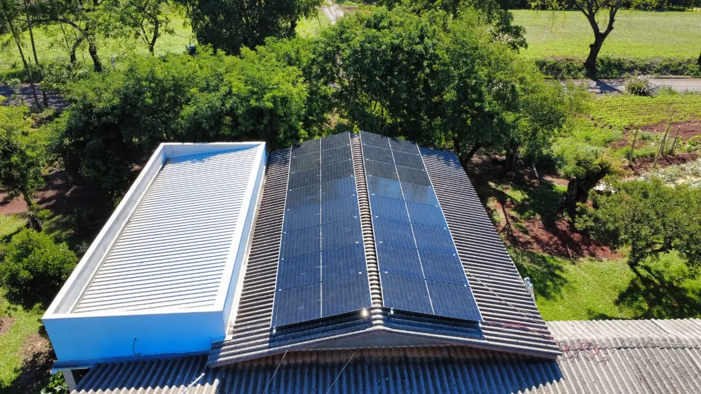
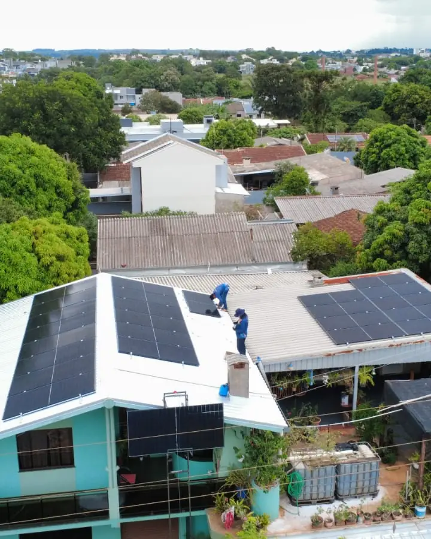
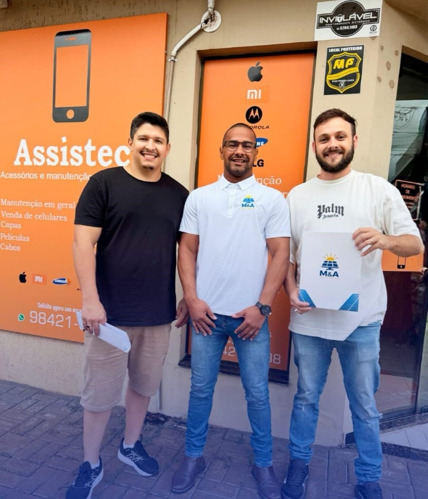
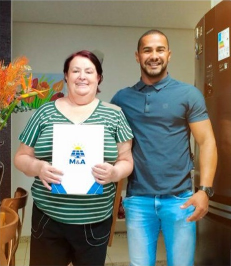
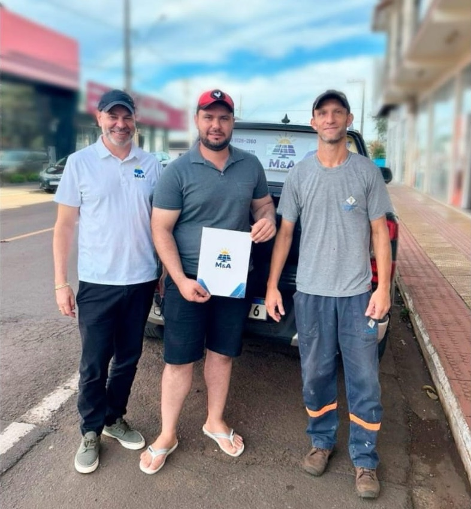
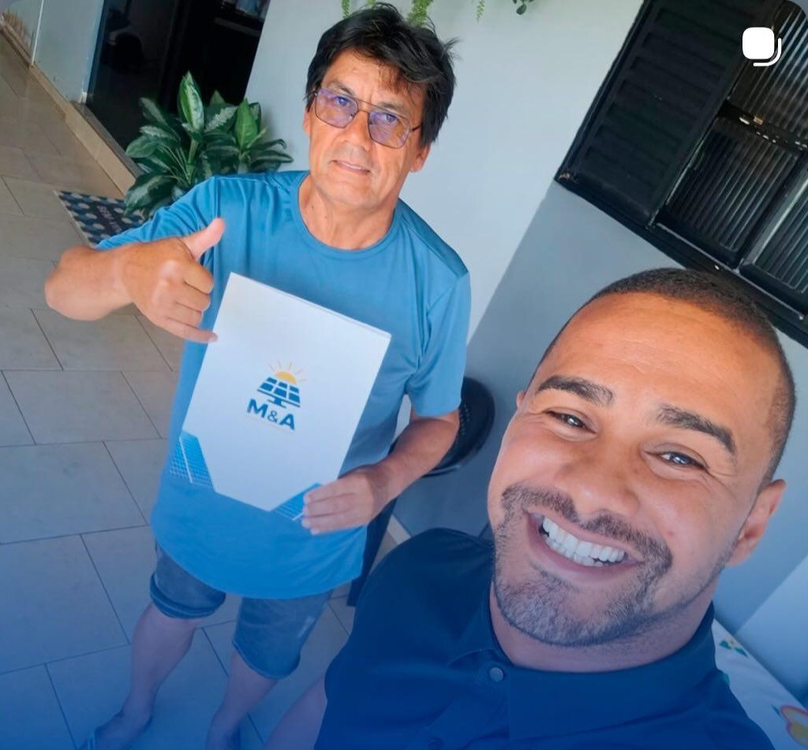
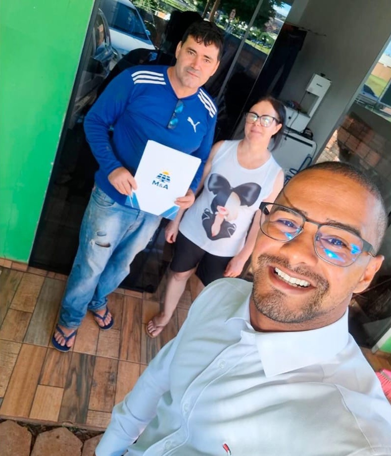
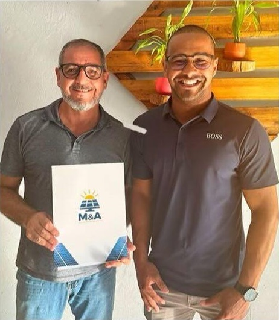

Até 90% de economia na conta de luz da empresa
Atendemos Assis Chateaubriand com equipe própria, a partir da nossa sede em Medianeira. Projeto elétrico assinado, ART no CREA-PR e homologação completa junto à Copel - do protocolo inicial até a troca do medidor bidirecional. Orçamento calculado a partir da sua fatura real, sem estimativa de tabela.
Resposta em poucos minutos no horário comercialA M&A Soluções Energéticas atende Assis Chateaubriand com equipe própria, a partir da nossa sede em Medianeira. O deslocamento não encarece a obra: nossos técnicos realizam a visita técnica, a instalação e o comissionamento em dias consecutivos, sem custo adicional de hospedagem repassado ao cliente.
Assis Chateaubriand tem perfil econômico marcado por grãos, cooperativa, agroindústria. Esse contexto define o dimensionamento: consumo com sazonalidade diferente do residencial urbano exige análise de doze meses de fatura, não uma estimativa de tabela. O telhado predominante na região é metálico em barracão, cerâmica na cidade, o que determina o tipo de estrutura de fixação, a carga sobre a cobertura e o tempo de montagem.
Comércios e prestadores de serviço têm uma vantagem sobre as residências: funcionam durante o dia, no mesmo horário em que o sistema gera. Boa parte da energia é consumida na hora, sem passar pela rede, o que aumenta a economia por kWh.
O dimensionamento parte dos doze meses de fatura e do horário de funcionamento. Um negócio que abre aos sábados e domingos tem uma curva de consumo diferente da de um escritório que fecha no fim de semana.
Envie uma foto da sua fatura de energia. Devolvemos o cálculo de economia, o investimento estimado e o tempo de retorno para Assis Chateaubriand e região.
Enviar minha conta de luz
Energia é um custo fixo que sobe todo ano e sobre o qual a empresa não tem controle. Gerar a própria energia transforma parte desse custo em um investimento com prazo de retorno conhecido.
Empresas com mais de um endereço podem usar os créditos de energia em outra unidade, desde que as contas estejam no mesmo CNPJ ou CPF e na área da mesma distribuidora.
Negócios em baixa tensão pagam só pela energia consumida. Os que têm demanda contratada precisam de um estudo específico, descrito na página de energia solar industrial em Assis Chateaubriand.
A fatura não zera: permanecem o custo de disponibilidade e a iluminação pública. O que muda é o tamanho da conta e a previsibilidade do gasto.
O perfil de consumo muda de um segmento para outro, e o projeto acompanha.
Iluminação e ar-condicionado no horário comercial, que coincide com a geração.
Refrigeração ligada o dia todo, com consumo maior nas horas quentes.
Climatização constante e equipamentos sensíveis, que pedem instalação elétrica bem protegida.
Fornos, câmaras frias e exaustão, com picos no preparo e no atendimento.
Consumo concentrado de segunda a sexta; os créditos do fim de semana abatem o restante do mês.
Motores e compressores em uso diurno, geralmente com boa área de telhado metálico.
Três perfis de consumo comuns na região, com potência, economia mensal projetada e prazo de retorno estimados para dar ordem de grandeza; o seu projeto é calculado com a sua fatura.
Consumo médio de 300 kWh/mês. Sistema de 3.2 kWp instalado sobre metálico em barracão. Geração mensal estimada suficiente para cobrir o consumo com margem para crédito nos meses de menor irradiação. Economia mensal projetada de R$ 255 e retorno do investimento em cerca de 6 anos. A parcela do financiamento em 84 meses ficaria abaixo da conta atual.
Consumo médio de 600 kWh/mês, com sazonalidade ligada ao perfil de grãos. Sistema de 6.3 kWp com estrutura adequada ao telhado predominante da região. Economia mensal projetada de R$ 510 após a homologação na Copel. Retorno médio em 5 anos, com financiamento disponível em linhas específicas para o setor.
Consumo de 900 kWh por mês, em horário comercial. Sistema de cerca de 9 kWp, com economia projetada próxima de R$ 765 por mês.
Nesse patamar, o sistema costuma se pagar em menos de cinco anos. Vale calcular antes do próximo reajuste da Copel.
Em outubro de 2026, a ANEEL registrava 278 sistemas de energia solar em unidades comerciais de Assis Chateaubriand, de um total de 3.160 no município.
A potência típica desses sistemas comerciais é de 14,2 kW (mediana), contra 5,5 kW nos residenciais. O comércio instala sistemas maiores porque consome mais e durante o dia.
O PIB de Assis Chateaubriand foi de R$ 2,03 bilhões em 2023, segundo o IBGE.
A geração varia com a estação. Em Assis Chateaubriand, a irradiação no plano horizontal vai de 6,44 kWh/m² por dia em dezembro a 3,12 em junho, com média anual de 4,96.
Fontes: ANEEL, Relação de Empreendimentos de Geração Distribuída (dados de outubro de 2026); IBGE, PIB dos Municípios 2023; NASA POWER, climatologia de irradiação solar.
Garantia de 30 anos só tem valor se existir estrutura para acionar. Trabalhamos com fabricantes que mantêm suporte em território nacional.
Usamos módulos de 620 W, de tecnologia tipo N (Ronma, Gokin e ERA). Segundo as fichas da Gokin e da Ronma, a potência cai de 0,29% a 0,30% por grau acima de 25 °C. Esse dado entra no cálculo de geração em cobertura metálica, que esquenta mais. Garantia de desempenho de 30 anos.
Em ligação trifásica de 127/220 V usamos o Sofar 30KTLX-G3-LV, de 30 kW, com quatro entradas independentes e duas séries de módulos em cada uma. Aceita até 51 kWp de módulos e tem eficiência máxima de 98,4% ou mais. Comércio com ligação monofásica recebe modelos de 5 kW a 10,5 kW.
Alumínio anodizado e parafusos em inox 304, dimensionados para a carga de vento da região conforme NBR 6123. Fixação sem furo desnecessário.
String box com DPS, fusíveis e disjuntores conforme NBR 16690 e exigências da Copel. É o item que a concorrência mais corta para baixar preço.
Aplicativo com geração em tempo real, histórico por período e alerta automático em caso de falha. Você acompanha do celular e nossa equipe recebe o mesmo alerta.
Cabos com dupla isolação e proteção UV, conectores MC4 originais e crimpagem com ferramenta específica. Sem emenda improvisada exposta ao sol.
Veja as marcas e os modelos de módulos e inversores que instalamos hoje
O estabelecimento continua funcionando durante todo o processo.
Analisamos doze meses de consumo e os dias e horários em que a empresa abre.
Avaliamos telhado, quadro de energia e padrão de entrada, no horário mais conveniente para o negócio.
Geração mês a mês, investimento detalhado e prazo de retorno com a tarifa em vigor.
Montagem no telhado sem interromper o atendimento; desligamento curto e combinado na ligação.
Conduzimos toda a documentação até a troca do medidor.
Registros de entrega feitos pela nossa equipe.






A M&A Soluções Energéticas atende Assis Chateaubriand com equipe própria, a partir da nossa sede em Medianeira. O deslocamento não gera sobretaxa: a visita técnica, a instalação e o comissionamento são realizados em dias consecutivos sem custo adicional para o cliente. A mão de obra da instalação tem garantia de 5 anos. O prazo final depende da Copel. A finalização do nosso serviço leva em torno de 45 a 60 dias.
O Oeste do Paraná tem condição de irradiação solar bastante favorável - média de 4,7 a 5,1 kWh/m²/dia ao longo do ano, superior à maioria dos países europeus onde a tecnologia já é amplamente consolidada. Em Assis Chateaubriand, com perfil de grãos, essa irradiação é suficiente para compensar com folga o consumo anual da maioria dos perfis de instalação.
Além de Assis Chateaubriand, atendemos com a mesma equipe as seguintes localidades:
Não encontrou sua localidade? Entre em contato mesmo assim - atendemos com frequência municípios vizinhos e, dependendo do porte do projeto, o deslocamento não altera o investimento final.
É o caso mais simples. O sistema valoriza o imóvel e a decisão depende só do titular.
Exige autorização do proprietário e um acordo sobre o destino do sistema no fim do contrato. Os equipamentos podem ser desmontados e reinstalados em outro endereço.
A energia que o sistema gera e a empresa não consome na hora vai para a rede e vira crédito. Esses créditos abatem o consumo dos meses seguintes e valem por 60 meses.
Quando o titular tem mais de uma unidade consumidora na área da mesma distribuidora, os créditos podem ser divididos entre elas. Assim, um telhado maior em um endereço pode ajudar a pagar a conta de outro.
Envie sua fatura pelo WhatsApp. Você recebe o estudo de viabilidade completo - sem custo e sem compromisso - com a economia projetada e o tempo de retorno do investimento.
Solicitar orçamento gratuito Atendimento humano · Seg a Sex · 8h às 18h · Sáb 8h às 12h